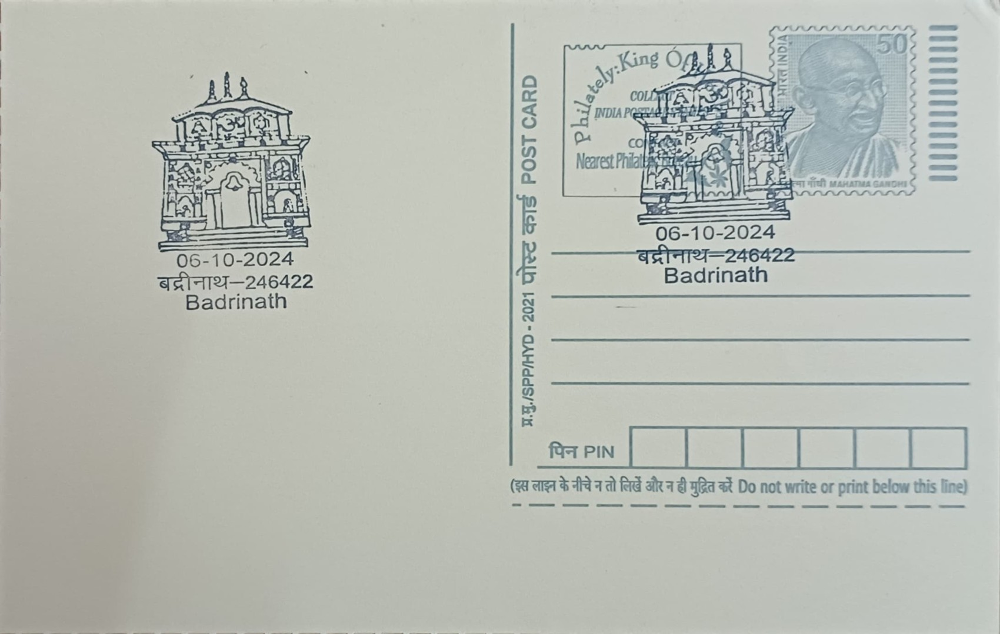

Shree Badarinath Temple
श्री बद्रीनाथ मंदिर


The sanctity of Badarinath is tied to the Puranic belief that Lord Vishnu performed penance here seated beneath a berry tree, or badri, after which the site takes its name, with the suffix nath denoting lordship. Tradition holds that the ninth-century philosopher Adi Shankaracharya recovered the black stone image of Badrinarayan from the Alaknanda River and enshrined it in a cave near the Tapt Kund hot springs, is said to have lived at the site for several years establishing its worship, and instituted the custom of appointing a Namboodiri Brahmin from Kerala, titled the Rawal, as chief priest, a practice that continues at a Himalayan shrine founded by a priest from the far south of the country.
Badarinath is counted among the four Char Dham and is also the northernmost of the 108 Divya Desams revered in Sri Vaishnavism, giving it a dual standing shared by few shrines in India. Dedicated to Vishnu in his meditative form as Badrinarayan, it is regarded as one of the holiest sites in the faith and draws pilgrims from across sectarian lines within Hinduism. Lying at an elevation above 3,100 metres on the banks of the Alaknanda in the Garhwal Himalayas, it also anchors a wider cluster of shrines known as the Sapta Badri, with the main temple serving as the principal and most visited among them.
Historical accounts indicate that the image was moved to its present site by a Garhwal king around the sixteenth century, after which rulers of the Garhwal dynasty enlarged the structure over the following century. Severe damage from the 1803 Himalayan earthquake prompted substantial rebuilding credited to the Maharaja of Jaipur, and further repairs followed subsequent avalanches and tremors. The temple stands roughly fifteen metres tall, its small cupola capped with a gold-gilt roof, and is organised into three parts, the garbha griha housing the main deity, the darshan mandap used for viewing and ritual, and the sabha mandap where pilgrims gather, while the brightly painted facade and overall form have long been compared to Himalayan Buddhist vihara architecture.
Immediately in front of the sanctum sits a seated image of Garuda, Vishnu's eagle vehicle, positioned in an attitude of prayer facing the main deity, while just below the temple lies the Tapt Kund, a sulphur hot spring maintaining a temperature of about forty-five degrees Celsius year-round, in which pilgrims traditionally bathe before entering. The temple's ritual calendar is itself a defining feature of the site, since snowfall closes the shrine for roughly six months each year, and the opening and closing dates are fixed annually through ceremonies combining astrological calculation with royal and priestly tradition, including the ceremonial transfer of light and worship to the nearby village of Joshimath during the winter closure.
Today the shrine is administered by the Shri Badarinath-Kedarnath Temple Committee, a statutory body constituted by the Uttarakhand government that oversees its upkeep, daily rituals and the logistics of the pilgrimage season, which regularly brings more than a million visitors within the brief months the temple remains accessible. The surrounding Mana village, often described as India's last village before the Tibetan frontier, and the nearby Vasudhara falls and Bhim Pul have grown into an associated pilgrim circuit that draws on Badarinath's footfall. Maintained under this committee's charge and tied administratively to its sister shrine at Kedarnath, Badarinath functions as both an active site of daily worship and the seasonal hub around which the entire Char Dham Yatra in Uttarakhand is organised.
| Date of Introduction | October 6, 2024 |
|---|---|
| Address | Sub Postmaster, |
| Badrinath Seasonal SO, | |
| Chamoli (dt.), Uttarakhand - 246422. |